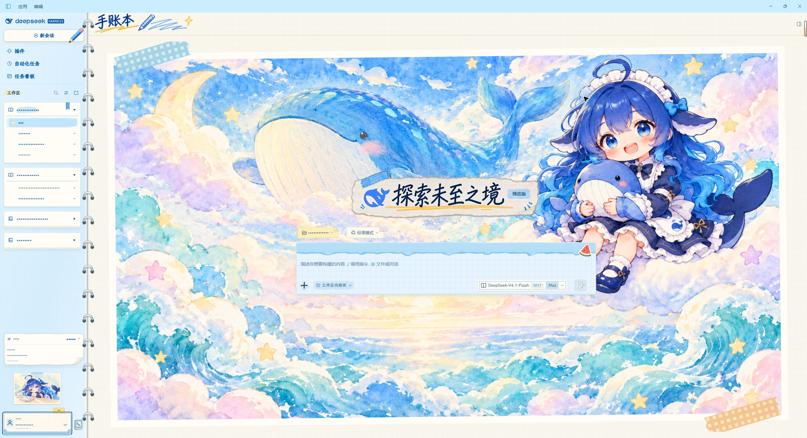
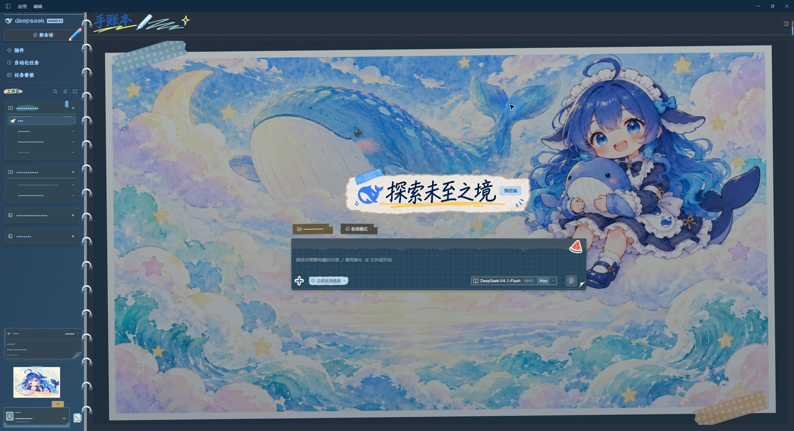
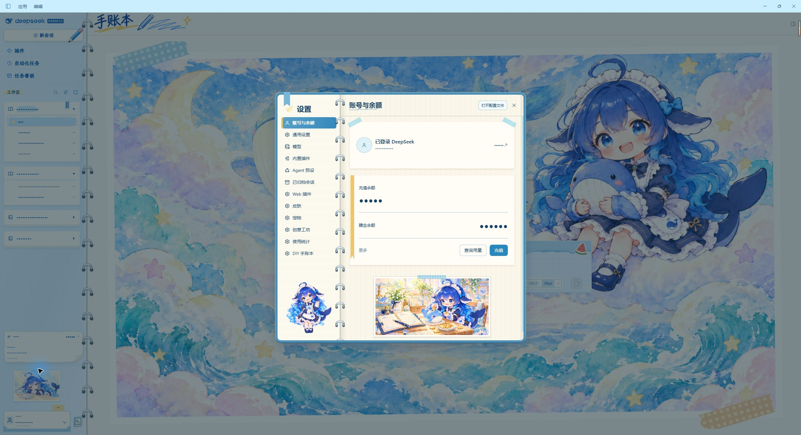
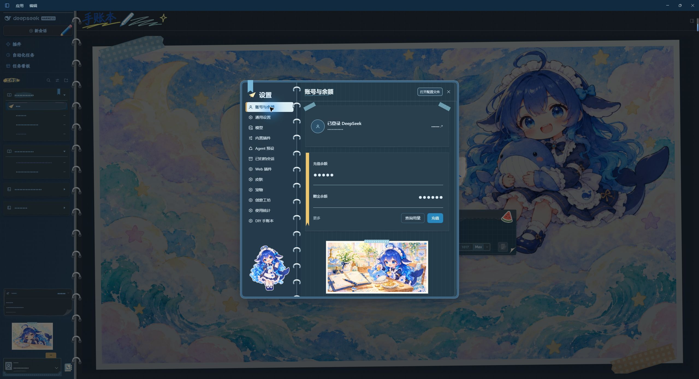

01 · 小飞机
当前会话的金色标记，以及运行时的飞行动画。
当前打开的会话
正在整理手账…
后台任务进行中…
状态由本页模拟；实际状态由宿主及获准钩子驱动。
Current / running / background states.
DIY JOURNAL / 1.14.1
小飞机、信封与工作区 · Interactive component gallery
使用发布包的真实 CSS；以下为示例数据演示，不是运行中客户端。不会发送消息、启动任务或修改设置。
当前会话的金色标记，以及运行时的飞行动画。
状态由本页模拟；实际状态由宿主及获准钩子驱动。
Current / running / background states.
点信封展开信纸，再点标题即可收起。
会话内容 · Sample conversation
可操作的展开／折叠样例 · Click to unfold.
蓝色夹板、金属夹和不同颜色的入口卡片。
These fixtures load the shipped stylesheets. Their controls simulate local display states only. No pet assets are included.
保留黄色警告条，纸底覆盖原来的半透明背景。
需要生成一份摘要，还是保留完整内容？
原生问题摘要卡，内容为演示。
等待补充参数后继续。
增加纸面底色，不改变输入和提交逻辑。
纸质卡片、邮票式图标和清楚的说明文字。
示例插件仅用于展示，不会安装。
添加连接后，可在这里管理远程主机。
仅面板静态示例，不连接主机。
帮助整理项目文档与说明。
检查改动并汇总发现。
技能名称是示例；沿用原生列表结构。
示例能力信息，不代表当前模型配置。
原生能力面板改为实心米色纸面。
▱ 项目文件
▧ README.md
▧ preview.html
展示面板纸底和选中标签，不模拟终端内容。
此窗口使用默认弹窗的米色不透明背景。
辅助说明已加深，便于在纸面上阅读。
适用于已匹配通用弹窗规则的窗口。
完整左栏；个人信息已遮盖；无授权宠物已隐藏。原始 JPEG 截图，未做主题变色。



